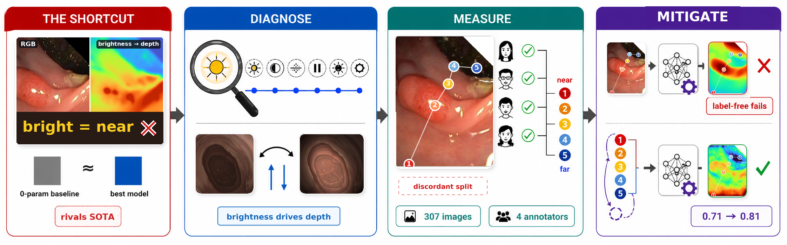

On real endoscopic tissue there is no metric depth ground truth, so monocular depth models are ranked by correlation metrics against weak references. We show this is unsafe: because the camera and the light source sit together on the scope, closer tissue is brighter, and a zero-parameter brightness baseline scores like a state-of-the-art model. The evaluation cannot tell illumination-invariant geometry from illumination-driven guessing.
We audit seven candidate cues and find brightness dominant; an interventional relighting probe shows the reliance is causal in the sense that predictions follow the light at fixed geometry; and on phantom metric depth, breaking the brightness–depth coupling sends the baseline towards chance while learned models hold. We release a 307-image, 4-annotator human-consensus ordinal benchmark on real colonoscopy whose brightness-discordant protocol re-orders the leaderboard, and we show that a labelled ordinal fine-tune restores brightness-discordant accuracy (0.71 → 0.81) while label-free de-biasing fails.
| Component | Contents |
|---|---|
annotations/ | Point coordinates and ranks, all per-annotator rankings, consensus and non-consensus labels, keyed to Kvasir-SEG image identifiers. |
folds/ | Image-level fold definitions and the cluster-disjoint robustness folds. |
code/ | The cue audit, the relighting operators, the evaluation protocol (pairwise, ExactMatch, brightness-discordant), and the fixed-geometry relighting experiment. |
heads/ | Trained DAV2 depth heads: ordinal fine-tune and relight-consistency variant, per fold. |
Kvasir-SEG images are not redistributed; the dataset's terms allow research
use but not redistribution. Annotations are keyed to the original image identifiers, and
code/example_loader.py joins them to images downloaded from the official Kvasir-SEG source.
All components above are in the repository (annotators anonymised A1–A4); the ten trained heads
(~124 MB each) are attached to the v1.0 release as two archives. Code is MIT-licensed; annotations,
folds, and heads are CC BY 4.0.
@article{albokhari2026brightnotnear,
title = {Bright $\neq$ Near: Auditing and Mitigating Illumination Shortcuts in
Ground-Truth-Free Endoscopic Depth},
author = {Albokhari, Rayan and Zhang, Chenyu and Gao, Rui and Li, Zexi and Rittscher, Jens},
journal = {Healthcare Technology Letters},
year = {2026},
note = {AE-CAI | CARE | OR 2.0 | PRiSM workshop at MICCAI 2026}
}
J. Rittscher was funded by the National Institute for Health Research (NIHR) Oxford Biomedical Research Centre. The views expressed are those of the authors and not necessarily those of the National Health Service, the NIHR, or the Department of Health.